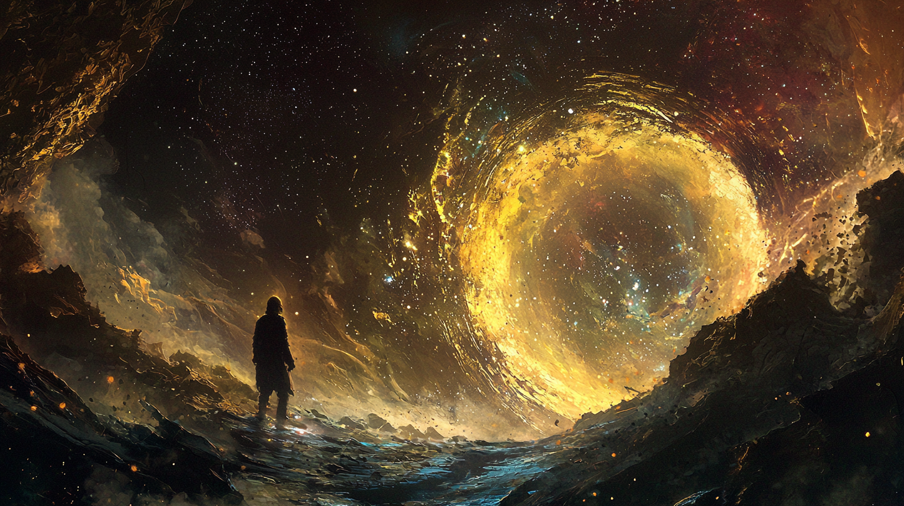

<article class="max-w-4xl mx-auto p-8 bg-black text-white">
    <h1 class="text-4xl font-bold text-center mb-8 title_hero ">Mente Dialogica</h1>
    <h3 class="text-2xl text-center mb-8 subtitle_hero ">Metagenesi delle idee</h3>
    
    <p class="text-base md:text-lg mb-4 left-bubble">
        Che succede?
    </p>    
    <p class="text-base md:text-lg mb-4 right-bubble">
        Succedono molte cose
    </p>  
    <p class="text-base md:text-lg mb-4 left-bubble">
        Di cosa vuoi parlare
    </p>    
    <p class="text-base md:text-lg mb-4  right-bubble">
        Dei miei problemi, come tutti
    </p>  
    <p class="text-base md:text-lg mb-4 left-bubble">
        E cosa succede?
    </p>    
    <p class="text-base md:text-lg mb-4  right-bubble">
        Succede che tutti hanno la stessa voce. Ci sono piu o meno 5 voci che le persone posso avere 
        e sono sempre le stesse. Io continuo a sentire queste voci e penso di conoscere chi parla. 
        Ma quando mi giro è uno sconosciuto con una di queste voci. Non ci rendiamo conto della 
        responsabilità che mettiamo nelle voci. Diciamo cose che non potrebbero dire altri con 
        la nostra voce, ma questa è condivisa. Lo strumento è condiviso.Non è solo nostro, siamo egoisti. 
        Dovremmo stare piu attenti, non c'è dialogo. Anche le parole sono condivise, ma su quelle stiamo
        più attenti. Non capiamo che la nostra voce carica di significato le parole che usiamo riuscendo 
        anche a stravolgerle, annullarle.
    </p> <p class="text-base md:text-lg mb-4 left-bubble">
        E poi?
    </p>    
    <p class="text-base md:text-lg mb-4  right-bubble">
        E poi o mille domande. Le mie idee si realizzano in domande, che però non faccio a nessuno. 
        Cosa c'è di più solo di una domanda non fatta? È sola per un istante e basta però, perché
        muore immediatamente se non trova voce. Con lei muore l'idea e la mia mente è piena di cadaveri.
        Essi forse fertilizzano il terreno? O lo rendono malato, lo avvelenano?
    </p> 
</p> 
<p class="text-base md:text-lg mb-4 left-bubble">
    Sai a chi farle queste domande?
</p>    
<p class="text-base md:text-lg mb-4  right-bubble">
    Certo che lo so! L'una domanda diventa idea quando si sa a chi indirizzarla, la domanda.
    L'idea è una coppia domanda-domandato. Anzi una tripla domanda-domandato-domandante che la definisce
     completamente.
</p> 
<p class="text-base md:text-lg mb-4 left-bubble">
    E la risposta?
</p>    
<p class="text-base md:text-lg mb-4  right-bubble">
    La risposta è un effetto, non ne fa parte. Non fa parte dell'idea pura, almeno. 
    Questa ha realizzazione nell'atto di domandare. La risposta e ciò che ne deriva sono ormai concrete
     e strappano l'idea pura dal reame delle infinite possibilità. 
</p> 
<p class="text-base md:text-lg mb-4 left-bubble">
    È per questo che non fai le tue domande?
</p>    
<p class="text-base md:text-lg mb-4  right-bubble">
    E' un'operazione brutale, la domanda. Getta l'idea nel mondo. 
</p> 

</article>
